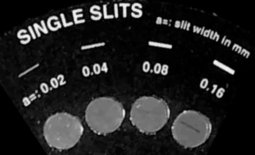
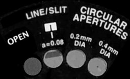
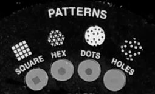
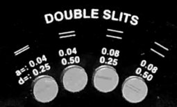
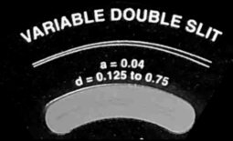
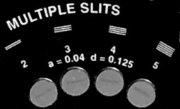
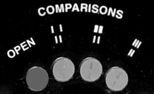

Diffraction & Interference
Click here to access the lab guide.
This will become a link to the course's GauchoSpace.
Set-Up
Here students will find links to a video in which each piece of equipment is introduced and incorporated into a set-up with the same layout as in the live feed,
as well as to equipment manuals and manufacturer websites.
Get Help
Here students will be advised of options for synchronous and asynchronous assistance.
Each will be assigned by the TA to a lab-specific breakout room in the Zoom meeting for their section, so they can use the various Zoom features to request help in real time. There will also be a link to a channel (ala Nectir, Piazza or Slack) for the lab where they get/give answers to questions.
Each will be assigned by the TA to a lab-specific breakout room in the Zoom meeting for their section, so they can use the various Zoom features to request help in real time. There will also be a link to a channel (ala Nectir, Piazza or Slack) for the lab where they get/give answers to questions.
(click to toggle the Ambient Light)





(click eyelid to toggle Screen Opacity)


This session will end and the system will reset in
45:00
minutes.

(click to toggle the Background)





(click the button to take a snap shot)